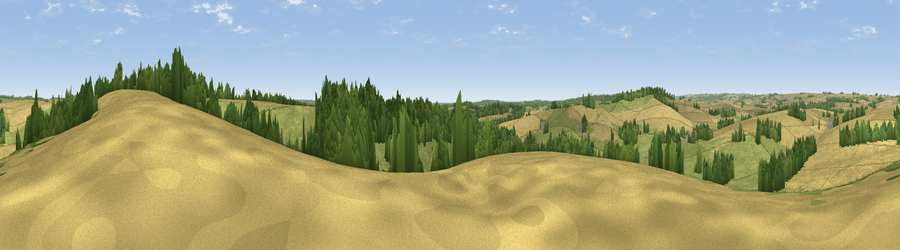

Viewpoint near Rockbourne
#34733 in England · top 56% of its area beats it · near RockbourneThe view, rendered

A 360° render of this exact spot computed from the terrain model, tree cover and land cover — summer colours, afternoon light, calibrated against photographs of famous viewpoints. Real trees, hedges and buildings will differ in detail.
The panorama
Grey silhouette: terrain skyline in each direction (720 bearings, Earth curvature and refraction included). Dashed green: skyline with trees (+15 m) and buildings (+8 m) as obstacles. Blue strip: how far the ground is visible on each bearing.
Where the view opens
Wedge length = distance to the farthest visible ground on that bearing (vegetation-aware). Rings at 10, 25 and 50 km.
What fills the view
44% cropland · 37% grassland · 19% woodland
Angular shares of the visible panorama (visual magnitude), not map area. Landscape diversity 0.46 (0–1 Shannon).
Key numbers
More beautiful places nearby
The staircase of upgrades: each row has a higher view potential than everything closer. Driving times are estimates from straight-line distance, calibrated against real road routing — check an actual route before setting out.
| Place | Direction | Drive | Score |
|---|---|---|---|
| Whitsbury Castle | NE · 1 km | ~4 min | 38.6 |
| Damerham Knoll | W · 2 km | ~5 min | 53.5 |
| Viewpoint near Bishopstone | NW · 7 km | ~14 min | 54.7 |
| Viewpoint near Martin | WSW · 8 km | ~15 min | 64.6 |
| Viewpoint near Cranborne | WSW · 8 km | ~17 min | 65.0 |
| Trow Down | W · 15 km | ~27 min | 67.5 |
| Monk's Down | W · 18 km | ~32 min | 74.4 |
| Viewpoint near Berwick St John | W · 19 km | ~33 min | 78.2 |
50.96962, -1.83368 · source: screening · position refined by local search. Computed location — check access rights before visiting.